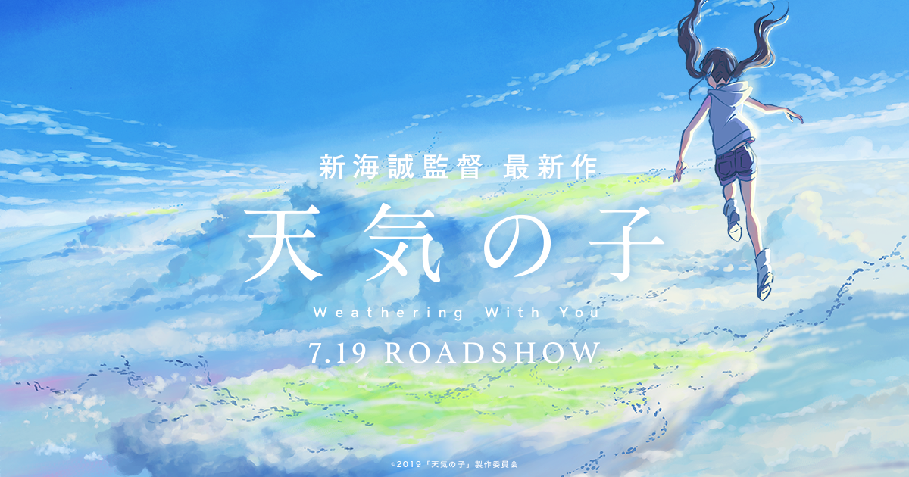
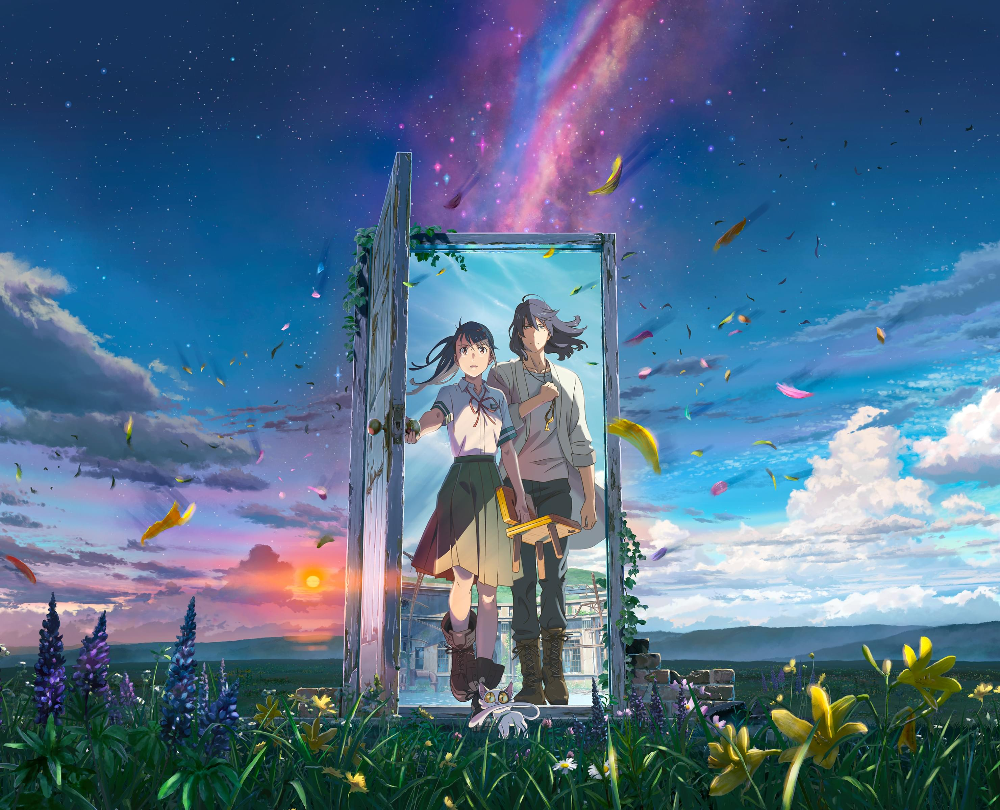

本文为日语论文，附中文摘要。正文、注释与参考文献依据作者提供的最终版收录，保留原文页码。配图为三部作品的官方宣传图，来源见图片下方。
摘要
近年来，新海诚的动画电影及其原作小说受到了较多关注。其作品不仅以细腻的画面、音乐和青春叙事吸引观众，也包含了不少与日本神道文化有关的内容。本文以《你的名字。》《天气之子》《铃芽之旅》及其原作小说为研究对象，结合文本细读和叙事分析的方法，考察神社、巫女、祭祀、结界、祈祷、御神体、常世等神道要素在作品中的表现及其作用。文章首先整理了三部作品在人物关系、空间设置和灾厄描写方面的共同点；其次分析了“结”“祈祷”“关门”等要素如何推动情节发展，并与人物选择和作品中的世界秩序发生联系；最后比较了三部作品中神道世界观的不同表现。通过分析可以看出，新海诚作品中的神道要素并不只是营造传统文化氛围的装饰，而是在一定程度上参与了叙事展开和主题表达，也体现了传统宗教观念在现代动画中的重新呈现。
关键词： 新海诚；神道；世界观；日本传统
要 旨
近年、新海誠のアニメ映画およびその原作小説は、多くの注目を集めていた。これらの作品は、繊細な映像や音楽、青春を中心とした物語によって観客を惹きつけるだけでなく、日本の神道文化に関わる要素も多く含んでいた。本稿は、『君の名は。』『天気の子』『すずめの戸締まり』およびその原作小説を研究対象とし、テキストの精読と叙事分析の方法を用いながら、神社、巫女、祭祀、結界、祈り、御神体、常世などの神道的要素が作品の中でどのように表され、どのような役割を果たしていたのかを考察した。まず、三作品に共通する人物関係、空間設定、災厄表象の特徴を整理した。次に、「結び」「祈り」「戸締まり」といった要素が、物語の展開や登場人物の選択、作品世界の秩序とどのように関わっていたのかを分析した。最後に、三作品における神道的世界観の表れ方を比較した。考察の結果、新海誠作品における神道的要素は、単なる伝統文化の装飾ではなく、物語の展開や主題表現に関わる重要な要素として機能していたことが分かった。また、それらは現代アニメの中で、伝統的な宗教観念が新しい形で表されていたことも示していた。
キーワード： 新海誠 神道 世界観 日本伝統
はじめに
新海誠は、2000年代以降の日本アニメーションを代表する作家の一人である。とりわけ『君の名は。』（ 2016）、『天気の子』（2019）、『すずめの戸締まり』（2022）は、興行成績、社会的話題性、国際的受容のいずれの点においても高い注目を集め、日本の現代アニメ映画を語るうえで欠かせない作品となっている。これら三作は、いずれも青春的な感情表現と壮大な世界設定を結びつけながら、災厄、喪失、記憶、救済といった主題を描いている点に共通性をもつ。
『君の名は。』は、時間のずれをともなう身体交換と災害の回避を軸に、人と人、土地と記憶との結びつきを描いた作品である。『天気の子』は、異常気象が続く東京を舞台に、「祈り」と引き換えに晴れをもたらす少女の存在を通して、個人の願いと世界の秩序との緊張関係を示している。『すずめの戸締まり』は、日本各地の廃墟に現れる「門」を閉じる旅を描き、災厄の記憶、喪失の受容、土地の鎮めという主題を前面に押し出している。
これらの作品に共通するのは、単なる幻想的演出ではなく、神社、巫女、祭祀、結界、祈り、御神体、常世といった神道的要素が、物語の背景装置としてではなく、人物行動と叙事展開を支える仕組みとして組み込まれている点である。そのため、新海誠作品は、現代ポピュラー文化の内部で伝統的宗教文化がどのように変形され、再構成されているのかを考察するうえで重要な研究対象である。また、彼の作品群は、聖俗の境界、災厄と救済、土地性と感情の結合といった表現の広がりに一定の影響を与えたと考えられる。
新海誠作品に関する先行研究は、大きく三つの方向に整理できる。第一に、作品の映像表現、叙事構造、時間構成に着目する研究である。これらの研究は、新
海作品における時間のずれ、空間移動、記憶の喪失と回復といった構造的特徴を明らかにし、その物語形式の独自性を論じてきた。第二に、宗教性や神話的モチーフに着目する研究である。この系統の研究では、『君の名は。』における「ムスビ」や御神体、『天気の子』における祈りと鳥居、『すずめの戸締まり』における門や常世などが、日本的宗教文化や神話的想像力と関わるものとして論じられている。第三に、災害、倫理、社会心理といった現代的文脈から作品を読む研究である。これらは、震災後日本の不安、気候危機、喪失経験の表象として新海作品を位置づけている。
しかし、先行研究にはなお二つの不足がある。第一に、多くの研究は個別作品の一側面に焦点を当てており、『君の名は。』『天気の子』『すずめの戸締まり』を横断的に比較しながら、そこに共通して現れる神道的世界観の構造を整理したものは多くない。第二に、神道要素を作品中の記号やモチーフとして指摘する研究は少なくないものの、それらが物語の進行、人物の選択、世界秩序の再編においてどのような機能を果たしているのかについては、なお十分に掘り下げられていない。したがって、本研究には、新海誠作品における神道的世界観を、表面的な意匠の列挙ではなく、叙事構造を動かす内的原理として検討する意義がある。
本論文は、現代アニメにおける神道的世界観の表象と機能を明らかにすることを目的とする。理論的視角としては、宗教文化表象研究および物語分析の視点を用い、神道的要素が作品内でどのように配置され、どのような意味作用を担っているのかを考察する。分析方法としては、作品テキストの精読を中心とし、重要な場面や台詞、地の文の表現を具体的に取り上げながら、物語構造・人物造形・空間設定との関係を検討する。
対象作品は、『君の名は。』『天気の子』『すずめの戸締まり』および各原作小説である。本論文が主として扱う問題は、これらの作品において、神社、巫女、祭祀、祈り、結界、門、常世といった神道的要素が、どのように物語展開と人物の運命に関与し、いかなる世界観を形成しているのかという点にある。
本論文では、まず各作品における神道的モチーフの具体的表現を整理し、次にそれらが叙事構造のなかで果たす役割を分析する。さらに三作品を比較することで、新海誠作品に共通する神道的世界観の特徴と、その現代的変容のあり方を明
らかにする。最終的には、新海誠作品における神道的要素は単なる伝統文化の装飾ではなく、人物の行為、災厄と救済の構図、世界秩序の再編を支える中核的な叙事原理として機能していることを示したい。
第一章 先行研究と課題の概要
1.1 先行研究
新海誠作品に関する研究は、これまで主に映像表現、時間と記憶、人物関係、災害表象などの観点から行われてきた。とくに『君の名は。』の大きな成功以後は、新海作品を単なる青春恋愛物語としてではなく、現代社会における喪失感、不安、断絶、そして再接続の願いを表す作品として読む研究が増えている。こうした研究では、都市と地方、過去と現在、個人感情と社会的経験といった複数の層が、新海誠作品の中でどのように重ね合わされているかが論じられてきた。
また、アニメと宗教文化に関する研究では、神社、祭り、祈り、巫女、異界などの要素が、作品の中でどのような意味を持っているかについて多くの議論がある。これらの研究は、宗教的要素を単なる背景や装飾としてではなく、作品の世界観や物語展開に関わる重要な要素として捉えている。新海誠作品についても、『君の名は。』における神社、組紐、口嚙み酒、『天気の子』における鳥居、祈り、晴れ女、『すずめの戸締まり』における門、常世、祝詞など、神道を連想させる表現に注目した研究が見られる。
しかし、先行研究を整理してみると、いくつかの点でなお検討の余地がある。第一に、個別作品を対象とする研究は多いが、『君の名は。』『天気の子』『すずめの戸締まり』の三作品を連続した流れの中で比較し、その共通点と差異をまとめて考察する研究はそれほど多くない。第二に、神社や鳥居、巫女などの宗教的モチーフそのものに注目する研究はあっても、それらが物語の内部でどのように作動し、人物の選択、超自然現象の成立、災厄や記憶の意味づけとどう結びついているかを、叙事構造の面から整理した研究は十分ではない。
とくに新海誠作品では、宗教的な要素が画面上に置かれているだけではなく、物語の動きを支える仕組みとして機能しているように見える。『君の名は。』では「結び」が時間と人間関係をつなぐ原理として現れ、『天気の子』では祈りが天候の変化と代価をともなう行為として描かれ、『すずめの戸締まり』では門と
常世が災厄と境界の問題を支える基盤となっている。したがって、三作品に現れる神道的要素を個別に拾うだけでなく、それらを比較しながら、どのような世界観のもとで作動しているのかを考える必要がある。
以上のことから、先行研究は新海誠作品の理解に多くの示唆を与えている一方で、三作品を並置し、神道的要素を叙事の内部構造として捉える視点は、さらに深める余地があると考えられる。本研究はその点に着目し、新海誠作品における神道的世界観の表現とその機能を、比較的な視点から検討するものである。
1.2 課題の概要
本研究の課題は、新海誠の『君の名は。』『天気の子』『すずめの戸締まり』において、神道的な要素がどのように表現され、それが作品の中でどのような役割を果たしているのかを明らかにすることである。
これまで新海誠作品は、「つながり」「喪失」「災害」「記憶」といった主題から多く論じられてきた。もちろん、こうした視点は作品を理解するうえで重要である。しかし、その背後にある世界の仕組みに注目すると、三作品には共通して、人と人、人と土地、この世と異界、願いと代価、災厄と鎮めといった関係を組み立てる神道的な発想が見られる。つまり、神道的要素は単なる日本文化らしさを示す記号ではなく、物語の内部因果を成立させる枠組みとして機能していると考えられる。
たとえば、『君の名は。』では「ムスビ」が人間関係や時間の流れを説明する原理として語られ、身体交換や異時の出会いに一定の内部論理を与えている。『天気の子』では、祈りによって晴れがもたらされる一方、その応答には代償が伴う。ここでは、願いの成就が無条件の奇跡として描かれているのではなく、交換と選択の問題として提示されている。さらに『すずめの戸締まり』では、門、常世、戸締まりという装置を通して、災厄の裂け目を閉じ、記憶と傷を鎮めるという主題が前面に出てくる。このように見ると、三作品はそれぞれ異なる物語を持ちながらも、神道的世界観を背景に共有しており、しかもその表れ方は作品ごとに変化している。
したがって本研究では、三作品に共通する神道的要素を整理しつつ、それぞれの作品においてどのような機能を担っているのかを考察する。そのうえで、新海誠作品における神道的世界観が、「結び」による再接続から、「祈りと代価」の構図を経て、「常世と戸締まり」による鎮めと返還へと、段階的に展開していることを明らかにしたい。
1.3 研究対象と研究方法
本研究では、新海誠のアニメーション映画『君の名は。』『天気の子』『すずめの戸締まり』を主な研究対象とする。また、必要に応じて原作小説の記述も参照する。これは、映像だけでは十分に言語化されていない場面の意味や、登場人物の認識、宗教的要素の表現を、より具体的に確認するためである。
研究方法としては、まず三作品に現れる神道的要素を整理する。具体的には、神社、巫女、組紐、口嚙み酒、鳥居、祈り、晴れ女、門、常世、祝詞、戸締まりなどの要素を取り上げ、それらがどのような場面で現れ、どのような文脈の中で意味づけられているかを確認する。次に、それらの要素が単なる背景ではなく、物語の展開、人物の選択、災厄の発生や処置、記憶や時間の構造とどのように結びついているかを分析する。
本研究は、神道そのものを宗教学的に厳密に論じることを主な目的とするものではない。そうではなく、現代アニメ作品の中で神道的な発想や表現がどのように再構成され、どのような叙事的機能を持つようになっているのかを考察することに重点を置く。そのため、作品テキストの引用と場面分析を中心に進め、必要に応じて先行研究の議論も参照しながら論を組み立てる。
第二章 作品紹介
2.1 『君の名は。』
『君の名は。』は、新海誠が原作・脚本・監督を務めた長編アニメーション映画であり、2016年8月 26日に公開された。また、映画公開に先立ち、新海誠自身による小説版『小説 君の名は。』が 2016年6月18日に刊行されている。映画と小説はいずれも、東京で暮らす高校生・立花瀧と、岐阜県糸守町に住む高校生・宮水三葉が、夢の中で互いの身体を入れ替えるという不思議な出来事を軸に展開する。二人は最初、互いの生活に戸惑いながらも、少しずつ相手の存在を意識し、やがて強い結びつきを深めていく。しかし、物語が進むにつれて、その背後には彗星災害、時間のずれ、記憶の消失、そして「ムスビ」という主題が深く関わっていることが明らかになる。そのため本作は、青春恋愛映画としての側面をもちながら、時間、記憶、運命、人と人との縁をめぐる物語としても読むことができる。
小説版は映画の内容をほぼ踏襲しているが、映像では一瞬で流れていく感情の動きや人物の内面が、文章によってより丁寧に描かれている点に特徴がある。そのため、小説版は映画の補足資料というだけでなく、作品の主題や人物心理を理解するうえでも重要なテクストである。また、映画『君の名は。』は公開後に大きな反響を呼び、国内興行収入 251.7億円を記録したほか、第 40回日本アカデミー賞では最優秀脚本賞と最優秀音楽賞を受賞し、第 71回毎日映画コンクールではアニメーション映画賞、第 20回文化庁メディア芸術祭ではアニメーション部門大賞を受賞した。これらの実績は、本作が商業的成功だけでなく、物語構成、映像表現、音楽の面でも高く評価された作品であることを示している。
さらに本作では、神社、巫女、組紐、口嚼酒、御神体といった神道的要素が、単なる背景的な装飾としてではなく、物語の展開そのものに深く関わっている。とりわけ宮水家の祭祀や「ムスビ」の思想は、三葉という人物の位置づけだけでなく、瀧との結びつきや、作品全体の時間構造を理解するうえでも重要な意味を
もっている。したがって、『君の名は。』は、現代的な青春物語の形式をとりながら、日本的な宗教文化や他界観を新たな形で描き出した作品として位置づけることができる。
2.2 『天気の子』

『天気の子』は、新海誠が原作・脚本・監督を務めた長編アニメーション映画であり、2019年7月 19日に公開された。また、映画公開の前日である 2019年7月18日には、新海誠自身による小説版『小説 天気の子』も刊行されている。物語は、離島から東京へ家出してきた高校生・森嶋帆高と、祈ることで一時的に天気を晴れにできる力をもつ少女・天野陽菜との出会いを中心に展開する。二人はその能力を利用して人々の依頼に応えていくが、やがてその「祈り」と「晴れ」が大きな代償を伴うものであることが明らかになる。このように本作は、少年少女の出会いと恋愛を描きながらも、天候異変、祈り、犠牲、選択といった問題を重ね合わせた作品として構成されている。
小説版は映画の内容をほぼ踏襲しているが、帆高や陽菜の内面、東京という都市空間に対する感覚、不安や切実さの表現が文章によってより丁寧に描かれている。そのため、小説版は映画の補足というだけでなく、登場人物の心理や作品の主題を理解するうえでも重要なテクストである。また、映画『天気の子』は公開後に大きな反響を呼び、商業的にも高い成功を収めた作品であり、第 43回日本アカデミー賞では優秀アニメーション作品賞を受賞するなど、映像表現と物語性の両面で高く評価された。
さらに本作では、鳥居、祈り、結界、天候の変化といった神道的要素が、単なる背景的な装飾としてではなく、物語の展開そのものに深く関わっている。とりわけ陽菜の「晴れ女」としての力は、超自然的な奇跡として描かれるだけではなく、祈りに対する応答と、それに伴う代償という構造の中で意味づけられている。したがって、『天気の子』は、現代の都市を舞台とした青春物語であると同時に、祈りと犠牲、個人の願いと世界の秩序との関係を描いた作品として位置づけることができる。
2.3 『すずめの戸締まり』

『すずめの戸締まり』は、新海誠が原作・脚本・監督を務めた長編アニメーション映画であり、2022年 11月 11日に公開された。また、映画公開に先立ち、新海誠自身による小説版『小説 すずめの戸締まり』が同年 8月 24日に刊行されている。したがって本作も、『君の名は。』『天気の子』と同様に、映像と小説の両面から作品世界をたどることのできる構成をもつ。
物語は、九州の町で暮らす少女・鈴芽が、「扉」を探して旅をする青年・草太と出会うことから始まる。草太は、災いをもたらす扉を閉じる「閉じ師」として各地を巡っており、鈴芽もまた彼とともに、日本各地に現れる扉を閉じる旅へと巻き込まれていく。作品紹介でも示されているように、本作は日本各地の廃墟を舞台に、災いの元となる扉を閉めていく少女の解放と成長を描いた物語であり、冒険の要素をもちながらも、その根底には災厄、喪失、記憶、そして境界の回復という主題が流れている。
小説版は映画の内容をほぼ踏襲しているが、鈴芽の内面や草太との関係の変化、旅のなかで触れられる喪失の感覚などが、文章によってより丁寧に示されている。そのため、小説版は映画の補足にとどまらず、作品の感情的な深まりや主題の理解を助けるテクストとして読むことができる。
また、映画『すずめの戸締まり』は公開後に高い評価を受け、第 46回日本アカデミー賞では優秀アニメーション作品賞と最優秀音楽賞を受賞し、 VFX-JAPANアワード 2023では劇場公開アニメーション映画部門最優秀賞、第 73回芸術選奨文部科学大臣賞メディア芸術部門も受賞している。これらの受賞歴は、本作が商業的成功だけでなく、映像表現、音楽、主題性の面でも高く評価された作品であることを示している。
さらに本作では、常世、門、祝詞、戸締まりといった要素が、単なる背景的な装飾ではなく、物語の展開そのものに深く関わっている。門は異界と現世をつなぐ境界として機能し、戸締まりはその境界の乱れを鎮めるための実践として描かれる。その意味で『すずめの戸締まり』は、少女の成長を描く物語であると同時
に、災厄と記憶、喪失と回復をめぐる神道的世界観を現代的に描き直した作品として位置づけることができる。
第三章 神道文化における世界観
本章では、後の作品分析に入る前に、神道文化に見られる基本的な世界観を整理する。神社、巫女、祭祀、祈り、結界、常世などの要素は、それぞれ別々に存在しているのではなく、人と自然、人と土地、人と目に見えない存在との関係の中で理解されてきた。したがって、本章では「結びの観念」「祈り・祭祀と境界意識」「常世観」という三つの点から、神道文化の基本的な考え方を確認する。
3.1 産霊の観念
神道文化を考えるとき、まず大切なのは「つながり」を重視する考え方である。日本の伝統的な文化では、人と人との関係、人と土地との関係、さらに過去と現在とのつながりも、完全に切り離されたものとしてではなく、互いに結ばれたものとして理解されることが多い。
このような見方は、単に人間関係だけを意味するものではない。家族や地域共同体とのつながりだけでなく、自然や祖先、土地の記憶とのつながりも含んでいる。そのため、日本の伝統文化においては、個人は一人だけで独立して存在するのではなく、周囲との関係の中で生きる存在として考えられてきた。
また、この「産霊」は固定されたものではない。人と人との関係は、時に強くなり、時に弱くなり、また結び直されることがある。土地との関係も、祭りや年中行事を通して何度も確かめ直される。つまり、「産霊」とは、初めから変わらない関係ではなく、時間の中で作られ、保たれ、更新されていく関係だといえる。
このように考えると、神道文化における世界観は、世界をばらばらのものの集まりとして見るのではなく、多くの関係によって成り立つものとして見る傾向を持っている。これが、後に見る祈り、祭祀、境界、他界といった考え方ともつながっていく。
3.2 祈り・祭祀と境界意識
神道文化において、祈りと祭祀は重要な意味を持っている。祈りは、単に個人の願いを神に伝える行為ではなく、人と神、人と自然、人と土地との関係を整え、確かめるための行為として理解されることが多い。祭祀もまた、神に向かって何かを願うだけではなく、共同体の秩序や土地とのつながりを保つための実践として行われてきた。
色音は、神道が日本古来の民族宗教であり、神や神霊に対する信仰だけでなく、伝統的な祭祀、生活習俗、思考方式なども広く含むと述べている。また、神道には特定の教祖や教義、経書がないことも指摘している1。この点から見ても、神道は厳密な教義の宗教というより、生活の中で受け継がれてきた文化的・実践的な性格を強く持っているといえる。
祈りや祭祀と深く関係するのが、境界に対する意識である。神道文化では、日常の空間と神聖な空間とはまったく同じものではない。そのため、両者のあいだには何らかの区切りが必要だと考えられてきた。神社の鳥居や参道、社殿の配置などは、その区切りを目に見える形で示すものである。
鳥居は一般に、神域への入口を示すものとされる。それはただの建築物ではなく、日常から神聖な領域へ入るときの境目を表している。また、神社の境内や祭祀の場も、普段の生活空間とは少し異なる意味を持つ場所として意識される。人々はそこで手を合わせ、礼をし、祈りを行うことで、目に見えない存在との関係を感じ取ってきたのである。
さらに、神道では自然物そのものが神と関係するものとして扱われることも多い。色音は、神道の信仰対象には火の神、農業の神、分娩の神などがあり、石、木、神霊の依り代なども重要な意味を持つと述べている。このことからも、神道文化における祈りや祭祀は、単なる形式ではなく、人間が自然や神聖な存在と向き合うための方法であったことが分かる。
1 色音. 日本神道教的历史与现状[J]. 世界宗教文化, 2014(06):47-51.
3.3 常世の観念
神道文化では、現世だけが唯一の世界であるとは考えられてこなかった。古くから日本には、現実の生活世界の外に別の領域を想定する考え方があり、その代表的なものの一つが「常世」である。常世は時代や文脈によって意味が少しずつ異なるが、一般には現世とは異なる他界として理解されてきた。
他界観において重要なのは、現世と他界が完全に切り離された別世界ではないという点である。両者は区別されているが、まったく無関係ではない。死者、祖先、霊的な存在などは、日常の外側にありながら、現世の人々の感情や行動と関わるものとして意識されることがある。したがって、他界は単なる空想の世界ではなく、現世の秩序や記憶ともつながる領域として受け止められてきた。
李德威は、神道教の影響下にある日本人の生死観について、神道は「霊」の存在を認めている一方で、その性質や行き先を仏教やキリスト教のように細かく定めてはいないと述べている2。の指摘は、神道の他界観を理解するうえで重要である。つまり、神道では死後の世界について非常に細かく説明するよりも、見えない世界が現世の外側に存在していること自体がまず大切にされているのである。
また、他界観は死や喪失の理解とも深く関わっている。人が亡くなった後どこへ行くのか、見えない存在はどこにあるのか、失われたものを人はどう記憶するのかといった問題は、宗教の問題であると同時に、人間の感情の問題でもある。神道文化における他界観は、こうした喪失の感覚を、現世の外にある世界との関係として受け止めようとする一つの考え方であったといえる。
さらに、他界観は災厄や不安とも無関係ではない。日常の秩序が乱れるとき、人々はその原因を単に現実の問題としてだけではなく、見えない世界との関係の乱れとして感じることがある。そのため、祈りや祭祀、鎮めといった行為を通して、乱れた秩序をもとに戻そうとする発想も生まれてきた。こうして見ると、常世観と他界観は、死後の世界だけの問題ではなく、記憶、災厄、鎮め、境界意識ともつながる広い意味を持っている。
2 李德威. 神道教影响下的日本人生死观[D]. 南昌: 南昌大学, 2016.
以上のように、神道文化における常世観と他界観は、現世の外に別の領域を想定しながら、その境界を強く意識する世界の見方である。そしてそこでは、死、喪失、災厄、記憶といった経験が、個人だけの問題としてではなく、より広い世界の構造の中で理解されているのである。
第四章 作品における神道世界観の表現
本章では、原作テキストの引用と場面分析を通じて、三作品における神道世界観の表現を具体的に検討する。引用箇所とその解釈は本章に集約し、第一章の作品紹介と区別して叙述する。
4.1 『君の名は。』と産霊
『君の名は。』の小説および映画において、「ムスビ」は全編を貫く重要な手掛かりである。初出は、隕石災害直前に三葉と瀧が最後に身体を入れ替えた局面で、瀧が三葉の視点で自らの身体を動かし、口嚼酒を奉納しに向かう道中、三葉の祖母が三葉（瀧）に向けて「結び」を説明する場面である。
「ムスビって知っとる？」
「ムスビ？」
俺のリュックを腹に抱えた四葉が、隣で訊き返す。木々の隙間の眼下には、
丸い湖の全体が見えている。ずいぶん高く登ってきたのだ。婆ちゃんを背負っ
て登り続けて、三葉の体は汗だくだ。
「土地の氏神さまのことをな、古い言葉で産霊って呼ぶんやさ。この言葉
には、いくつもの深いふかーい意味がある」
神さま？唐突になんの話だ？でも、まんが日本昔話みたいな婆ちゃんの声
には不思議な説得力がある。知っとるかい？とふたたび婆ちゃんは言う。
「糸を繫げることもムスビ、人を繫げることもムスビ、時間が流れること
もムスビ、ぜんぶ、同じ言葉を使う。それは神さまの呼び名であり、神さまの
力や。ワシらの作る組紐も、神さまの技、時間の流れそのものを顕しとる」
このように、「ムスビ」は単なる言葉の説明ではなく、作品全体を理解するための重要な考え方として示されている。身体交換や記憶のずれ、そして最後の再会は、それぞれ別々の奇跡として起こるのではなく、「結び」という発想のもとで互いに関係づけられていると考えられる。この点は、宗教的な語彙や観念がマンガやアニメなどのポップカルチャーの中で、新たな物語表現として用いられていることとも関係している3。
また、物語の構造という面から見ても、この説明は作品中の超自然的な出来事に一定の筋道を与えている。もし身体交換や記憶の断裂を単なる偶然の出来事として見るなら、それらは不思議な現象にとどまる。しかし、「ムスビ」が人と時間をつなぐ力として示されることで、身体交換、時間を超えた出会い、忘却、再会は同じ枠組みの中で理解できるようになる。つまり、「結び」は出来事をあとから説明するための言葉ではなく、物語そのものを支える考え方として機能しているのである。このように宗教的な概念が物語の展開を支える形で用いられている点は、ポピュラー文化の中で宗教語彙が新たな意味を与えられていることとも重なる4。
さらに、「ムスビ」は三葉という人物の位置づけにも深く関わっている。祖母は「ムスビ」を語るときに「土地の氏神さま」を強調し、組紐を「時間の流れそのものを顕す」ものとして説明している。ここから分かるのは、三葉の巫女的な性格が単なる地方色の表現ではなく、「結び」という仕組みそのものと結びついているということである。三葉はただ不思議な出来事に巻き込まれる少女ではなく、時間や記憶と関わる家系の中に置かれた人物として描かれている。そのため、口嚼酒や御神体への奉納も単なる小道具ではなく、人物と時間、記憶をつなぐ重要な役割を果たしていると考えられる5,6。
3周政. 新海诚动画电影中的时空叙事研究——以《你的名字》为例[J]. 剧影月报, 2025(01):1-3.
4石井研士. ポップカルチャーと宗教：マンガ・アニメにおける「生まれかわり」[J]. 國學院大學大学院紀要, 2016(48): 1-17.
5山根（吉長）智恵. 「君の名は。」の魅力―その普遍性と特殊性[J]. 山陽論叢, 2020(27): 83-95.
6 許光俊. 「君の名は。」について[J]. 教養論叢, 2020(141): 103-124.
4.2 『天気の子』と祈り
『君の名は。』が「 ムスビ」を顕名化し概念化したのに対し、『天気の子』と『すずめの戸締まり』ではこの語が直接反復される度合いは小さい。しかし両作には、儀礼、境界、交換や鎮めを通して、人と人、人と世界とを結びつけようとする共通した発想が認められる。『天気の子』を通底するのは、「祈り」という現象と「境界と結界」の象徴である。
原作テキストにおいて「祈り」現象が最初に現れるのは、森嶋帆高と天野陽菜が初めて出会った場面で、陽菜が帆高を廃ビルの屋上へ連れて行き、祈りによって空を晴らすくだりである。
思わず空を見上げた。灰色の雨雲と相変わらずの雨。少女を見ると、両手を組
んで祈るように目をつむっている。
「ねえ、それってどういう意味……」言いかけて、僕は言葉を飲み込んだ。
少女がうっすらと光っていた。いやちがう、どこからか、淡い光が少女に当た
っていた。いつの間にか吹き始めた風が、少女の二つ結びをふわりと持ち上げ
ている。しだいに光が強くなる。少女の肌と髪が、光を浴びて金色に輝く。ま
さか──僕は空を見上げた。
この引用箇所が示すように、「祈り」は単なる願いごとではなく、現実の変化を引き起こす行為として描かれている。まず「相変わらずの雨」という状況が示され、その後に陽菜の祈る姿、淡い光、風、そして空の変化が続いて現れる。こうした流れによって、作品は「祈り」が空に届き、応答が返ってくる過程を順に見せている。つまり、『天気の子』では、陽菜の力は説明的な言葉によってではなく、祈りという行為と、それに続く変化によって表されているのである。この点は、『君の名は。』が「ムスビ」という言葉で超自然的な仕組みを説明していたのとは対照的である。『天気の子』では、その仕組みは術語ではなく、祈りという行為と、それに対する現象や応答を通して表されている。また、この力は無
代価で万能なものではなく、気象神社の神主の語りを通して、その代償も示されている。
「それでも、天と人とを結ぶ細ぉーい糸がある。それが天気の巫女だ。人の切
なる願いを受け止め、空に届けることのできる特別な人間。昔はどの村にもど
の国にも、そういう存在がおったのだ」
「天気の巫女には、悲しい運命があってな──」
この点において、『天気の子』は、祈りに対する応答と、その代償という構図を現代的な物語の中に取り入れている。さらに、作中における「晴れ女」の再表象については、記号・イメージの次元から論じた研究もあり、鳥居・天候変化・祈り・自己消失の連関を通じて、「晴れ女」という身分がいかに叙事的に正当化されるかを補足するものとなる7。
さらに、陽菜自身が述べる「空と、がっちゃったんだと思う」という表現は、本作の特徴をよく表している。ここでは、神懸かりや降神のような古い宗教語は使われていない。その代わりに、現代の少女が自分の体験をなんとか言葉にしようとする口語的な表現が用いられている。しかし、その曖昧な言い方だからこそ、陽菜が空と切り離せない状態に入ってしまったことが強く伝わってくる。作品は、神道的な接続経験を難しい宗教用語で語るのではなく、現代の若者にも理解できる感覚として描き直しているのである。
4.3 『すずめの戸締まり』と境界
『すずめの戸締まり』においても、同様の「境界 と結界」の表象が見られ、全編を貫く装置として「門」が機能している。「門」が最初に登場するのは、すずめが草太と出会ったのち異変に遭遇し、裂け目としての「門」を目撃する場面である。
7刘晓宇. 从电影《天气之子》看新海诚的“物哀”美学[J]. 戏剧之家, 2022(09): 157-160.
目が、なぜか離せない。すぐ目の前に、白い扉が立っている。古い木のドアだ。
蔦が絡まり、所々ペンキがはげて茶色い木目が露出している。そのドアがほん
のすこしだけ開いていることに、私は気づく。一センチほどのその隙間が、奇
妙に暗い。どうして。こんなに青空なのに、どうして隙間がこんなに暗いのだ
ろう。私は気になって仕方がない。耳のひだに、風の音がかすかに吹き込んで
くる。真鍮色の丸いドアノブに、私は手を伸ばす。指先でそっと触れる。そっ
と触れただけなのに、きい、と音を立て、ドアが開く。
ドアの中には、夜があった。
満天の星が、噓みたいな眩しさでぎらぎらと光っている。地表にはさんざめく
草原が、どこまでも続いている。頭がおかしくなっちゃったのかもという恐怖
と、夢を見ているのかという混乱と、知っていたはずだよね という合点が、
濁流みたいに渦を巻く。私は左足を水から持ち上げて、草原に一歩踏み込もう
とする。ローファーの底が草を踏む、その感触が頭に浮かぶ──と、ぱしゃん、
靴はまた水を踏んだ。
この引用箇所から分かるように、ここでの「門」は単なる象徴的な記号ではなく、実際に二つの世界をつなぐ境界として描かれている。また、すずめが門を開ける場面も、ただの好奇心だけで説明できるものではない。むしろ、「門」そのものがすずめを引きつけ、触れさせ、開かせているように見える。さらに、扉の向こうに広がるのは単なる暗闇ではなく、「夜」「星空」「草原」といった、現実とは異なる一つの世界である。そのため、この場面で示されているのは、場所の移動というより、世界の境界そのものが開いてしまうことである。
ここでとくに重要なのは、「一センチほどのその隙間が、奇妙に暗い」という描写である。隙間そのものは小さいが、その暗さは周囲の青空と強い対照をなしている。つまり門は、最初から大きな裂け目として現れるのではなく、日常の中に生じたわずかな異常として示されている。しかし、その小さな異常が、現世と他界をつなぐ入口になっているのである。この描き方によって、作品は災厄の発生を派手な破壊としてではなく、日常の中に潜む境界の乱れとして表している。
さらに、常世は『すずめの戸締まり』全体を理解するための重要な手がかりである。
「すごく眩しい星空と、草原と……」
「常世だ」と、驚いた声で草太さんが言う。
「え？」
「君には常世が見えるんだ……」
「とこよ？」
「この世界の裏側。ミミズの棲家。すべての時間が同時にある場所」
すべての時間が、同時にある場所。頭のずっとずっと奥の方で、何かが噛み合
うような感覚が、一瞬あった。でも──とても手が届かないほど、そこは深いの
だった。
「……見えるけど、入れないの」
「常世とは、死者の赴く場所なんだそうだ」
この引用から分かるように、草太の説明する「常世」は、単なる死後の世界ではなく、空間、災厄、時間という複数の意味をもつ他界として描かれている。まず「この世界の裏側」という表現によって、常世は現世と無関係な別世界ではなく、現世のすぐ裏側にある領域として示される。次に「ミミズの棲家」という説明によって、常世は災厄の発生源とも結びつけられる。さらに「すべての時間が同時にある場所」という言い方によって、そこが現実の時間の流れとは異なる場所であることも示されている。したがって、門が開くことは空間の裂け目であるだけでなく、時間の秩序が乱れることも意味している。
また、すずめの「見えるけど、入れない」という言葉も重要である。これは、常世が自由に出入りできる場所ではなく、はっきりと境界づけられた領域であることを示している。そのため、「閉じ師」による戸締まりは、単なる技術的作業ではなく、乱れた境界を元に戻すための行為として意味をもつ。こうして、常世、門、災厄、戸締まりは、それぞれ独立した要素ではなく、作品全体を支える一つの仕組みとして結びついている。
以上を踏まえると、『すずめの戸締まり』における「戸締まり」は、単に穴を塞ぐことではなく、乱れた世界の境界を立て直し、行き場を失った記憶や災厄を本来あるべき場所へ返す行為として理解できる。門、常世、祝詞、閉門の一連の流れは、喪失を消し去るのではなく、それを抱えたまま受け止め直すための形式にもなっている。この点で本作は、『天気の子』に見られた代価の問題からさらに進み、災厄の後をどう受け止め、どう鎮めていくかという方向へ主題を深めているといえる。
第五章 三作品が日本における文化伝承への影響
本章では、新海誠の三作品を通して、神道的要素が現代の物語の中でどのように描き直され、日本における神道文化の継承にどのような示唆を与えているのかを考察する。とくに、秩序、儀礼、個人の選択という観点から、その特徴を整理する。
5.1 秩序と儀礼
神道文化においては、人と自然、土地と共同体の関係は、守るべき秩序として理解されることが多い。自然は単なる背景ではなく、人間の生活と深く関わる存在であり、時には恵みを与える一方で、災害や異変をもたらす存在でもある。そのため、奉納、祈願、祭り、祝詞などの儀礼は、単なる形式ではなく、乱れた秩序を整えるための行為として意味をもつ。
新海誠作品でも、こうした儀礼は背景的な要素ではなく、物語を支える重要な要素として描かれている。『君の名は。』では、宮水神社の祭りや口噛み酒、組紐などが、過去と現在、人と人をつなぐ役割を果たしている。とくに「結び」は、人間関係だけでなく、時間や記憶を結び直す力として表現されている。ここでは、神道的な儀礼が、失われかけたつながりを回復するための方法として機能している。
『天気の子』では、祈りによって天候が変化するという設定を通して、人間の願いと自然の秩序との関係が描かれている。陽菜の祈りは人々に晴れをもたらすが、その一方で、彼女自身が代償を負うことになる。この構図からは、自然の秩序を人間の願いだけで変えることの重さが示されている。つまり、祈りは単純に願望を実現する力ではなく、何らかの責任や代償を伴う行為として描かれている。
『すずめの戸締まり』では、祝詞と戸締まりが、災厄を鎮めるための儀礼として重要な意味をもつ。開いた扉から災厄が現れ、それを閉じることで土地の秩序が回復される。この過程では、ただ物理的に扉を閉めるだけでなく、その土地に
残された人々の記憶や思いを受け止めることが求められる。したがって、戸締まりは、災厄を防ぐ行為であると同時に、過去の傷や喪失を鎮める行為でもある。
小村明子も、アニメ作品における宗教的要素が、日本人の宗教意識や世界の捉え方と深く関わっていると指摘している8。この指摘を踏まえると、新海誠作品における神道的要素も、単なる装飾ではなく、日本人が自然、土地、死者、記憶をどのように受け止めてきたのかを表すものとして理解できる。
5.2 現代的な継承
新海誠の三作品では、神道的要素がそのまま古い形で示されるのではなく、現代的な問題と結びつけて描かれている。作品の中では、秩序を守ることが重視される一方で、登場人物はそれにただ従うのではなく、自ら選択する存在として描かれる。この点に、新海誠作品における神道文化の現代的な特徴がある。
伝統的な儀礼では、個人よりも共同体や土地の秩序が重視される場合が多い。しかし、新海誠作品では、共同体や自然の秩序が描かれると同時に、若い主人公たちの感情や選択も強く描かれている。たとえば『君の名は。』では、瀧と三葉が時間と記憶の断絶を越えて、互いを探し続ける。ここで重要なのは、伝統的な「結び」の力だけではなく、それを受け止めて行動する個人の意思である。
『天気の子』では、この問題がさらに明確になる。陽菜は天気を晴れにする存在として人々に求められるが、その役割を引き受けることは、彼女自身の消失につながっている。帆高は、世界全体の秩序を回復することよりも、陽菜という一人の人間を取り戻すことを選ぶ。この選択は、伝統的な犠牲の構図に対する疑問を含んでいる。王艳妃も、この作品では個人が犠牲として扱われることを拒み、自ら選択を引き受ける構図が描かれていると述べている9。
このように、『天気の子』では、神道的な祈りや自然観が、現代的な倫理の問題と結びつけられている。すなわち、世界の秩序を守るために一人の少女が犠牲になることは正しいのか、個人の幸福と社会全体の安定が対立したとき、どちら
8 小村明子. アニメと宗教：日本人の宗教に対する姿勢を考える[J]. 応用社会学研究,2022(64): 137-146.
9 王艳妃. 从《天气之子》看新海诚的艺术构建与表达[J]. 电影文学, 2020(03): 103-105
を選ぶべきなのかという問いが提示されている。この点で、神道的要素は古い伝統の再現にとどまらず、現代社会における価値判断の問題を考えるための装置となっている。
『すずめの戸締まり』では、個人の選択は災厄や喪失の記憶と結びついている。すずめは、各地の扉を閉じていく中で、廃墟となった場所や、そこに残された人々の生活の痕跡に触れる。これらの場所は、単なる舞台ではなく、過去に存在した生活や記憶を持つ空間として描かれている。すずめが戸締まりをすることは、災厄を防ぐだけでなく、忘れられた場所や失われた時間に向き合う行為でもある。ここにも、神道的な鎮めの発想が現代的に描き直されているといえる。
5.3 継承への示唆
三作品を比べると、それぞれ異なる形で神道的世界観が現代的に受け継がれていることが分かる。『君の名は。』では、「結び」を通して、人と人、時間と記憶が再びつながる可能性が描かれている。『天気の子』では、祈りに対する応答と代償の問題が強調され、個人の選択が強く問われている。『すずめの戸締まり』では、代償の問題よりも、傷や喪失をどのように受け止め、鎮めるのかという点に重点が移っている。祝詞や戸締まりは、裂け目を閉じ、秩序を回復するための行為として描かれている。
この変化から分かるのは、新海誠作品における神道文化の継承が、固定された伝統の保存ではなく、時代に応じた再解釈として行われているということである。三作品に登場する神道的要素は、古い宗教的知識をそのまま説明するものではない。むしろ、現代の観客が自分自身の経験と結びつけて理解できるように、物語の中で再構成されている。たとえば、結びは人間関係や記憶の問題として、祈りは個人の願いと社会的責任の問題として、戸締まりは災害後の喪失や記憶の問題として描かれている。
また、これらの作品は、若い世代が神道文化に触れる一つの入り口にもなっている。現代社会では、神社や祭りは日常生活の中に存在していても、その意味を深く考える機会は多くない。しかし、アニメ映画という親しみやすい形式を通し
て、観客は神社、祈り、祝詞、常世といった要素に自然に触れることができる。その結果、神道文化は難しい宗教知識としてではなく、物語を通して感じ取られる文化的記憶として受け継がれていく。
もちろん、新海誠作品に描かれる神道文化は、学術的・宗教的に完全な再現ではない。映画作品である以上、物語性や映像表現のために再構成されている部分も多い。しかし、そのことは必ずしも欠点ではない。むしろ、現代の観客に伝わる形へ変化することで、神道的要素は新しい生命力を得ていると考えられる。伝統文化は、古い形をそのまま守るだけではなく、時代ごとの表現形式の中で新しく意味づけられることで継承されていくのである。
以上のことから、新海誠作品は、神社、巫女、祈り、祝詞、常世といった神道的要素を現代の観客にも理解しやすい形で再構成しているといえる。三作品は、神道文化を単なる背景や装飾として用いるのではなく、物語を動かす仕組みとして活用している。そしてその中で、伝統的な秩序観、儀礼の意味、個人の選択、喪失の受け止め方といった問題を現代的に描き出している。その意味で、これらの作品は、日本において神道文化を継承していくうえで、伝統的要素を現代的な物語の中で生かす一つのあり方を示している。
おわりに
本稿は、新海誠の『君の名は。』『天気の子』『すずめの戸締まり』を対象として、現代アニメにおける神道的世界観について考察した。三作品を通して見えてきたのは、神社、巫女、祈り、結界、常世、祝詞といった要素が、単なる背景や装飾ではなく、物語を動かす仕組みとして用いられているという点である。
また、三作品を比較すると、その描かれ方には一定の変化が見られる。『君の名は。』では「結び」を通して、人と人、時間と記憶の再接続が描かれる。『天気の子』では、祈りに応答が返ってくる一方で、その代償を誰が負うのかという問題が前面に出てくる。さらに『すずめの戸締まり』では、犠牲の問題よりも、災厄や喪失の記憶とどう向き合い、それをどう鎮めていくのかが重視されている。
以上より、新海誠作品における神道的要素は、伝統文化の雰囲気を示すためのものではなく、現代的な物語の中で新たな意味を与えられた表現として機能しているといえる。その意味で、これらの作品は、日本の宗教文化に見られる境界、秩序、儀礼といった考え方を、現代アニメの中で分かりやすく描き直したものとして位置づけることができる。
参考文献
[1] 黄硕钊等.日本动漫中的废墟隐喻及其文化慰藉功能研究——以《铃芽之旅》作为
视觉个案[J].创意, 2024(03):113-116.
[2] 李德威.神道教影响下的日本人生死观[D].南昌: 南昌大学, 2016.
[3] 刘晓宇.从电影《天气之子》看新海诚的“物哀”美学[J].戏剧之家, 2022(09):157-
160.
[4] 色音.日本神道教的历史与现状[J].世界宗教文化, 2014(06):47-51.
[5] 王艳妃.从《天气之子》看新海诚的艺术构建与表达[J].电影文学, 2020(03):103-105.
[6] 吳晉安.也無風雨也無晴——論新海誠《天氣之子》的角色寓意[J].問學,
2020(24):23-42.
[7] 周政.新海诚动画电影中的时空叙事研究——以《你的名字》为例[J].剧影月报,
2025(01):1-3.
[8] 石井研士.ポップカルチャーと宗教：マンガ・アニメにおける「生まれかわり」
[J].國學院大學大学院紀要, 2016(48):1-17.
[9] 小村明子.アニメと宗教：日本人の宗教に対する姿勢を考える[J].応用社会学研
究, 2022(64):137-146.
[10] 佐藤絢香.アニメにみられる神話的要素についての考察[J].京都先端科学大学人
文学会論文集, 2015:40-49.
[11] 許光俊.「君の名は。」について[J].教養論叢, 2020(141):103-124.
[12] 山根（吉長）智恵.「君の名は。」の魅力―その普遍性と特殊性[J].山陽論叢,
2020(27):83-95.
文献概要
[1] 黄硕钊等. 2024.《日本动漫中的废墟隐喻及其文化慰藉功能研究——以〈铃芽之旅〉作为视觉个案》
本文以《铃芽之旅》为中心，讨论作品中“废墟”这一意象所包含的文化意义。作者指出，影片中的废墟并不是单纯的场景设置，而是与日本的灾难经验、神道式自然观以及创伤记忆联系在一起。文章从“神道教影响下日本人的灾难观”“PTSD视角下铃芽的心理废墟”“具象废墟与心理废墟的异质同构”三个方面展开分析，说明废墟既具有现实性，也具有文化象征意义。该文对理解《铃芽之旅》中的灾难书写、土地记忆与文化慰藉具有较强参考价值。
[2] 李德威. 2016.《神道教影响下的日本人生死观》
本文从神道教角度讨论日本人的生死观问题，重点分析“灵”“死亡”“武士道”等概念之间的关系。作者认为，神道承认“灵”的存在，但并不像佛教或基督教那样对死后世界作出十分明确的规定，因此形成了较为独特的生死理解方式。文章还将神道观念与日本社会历史、文化心理联系起来加以考察。其意义在于为理解神道文化中的他界观、死亡意识与秩序观念提供了理论背景。
[3] 刘晓宇. 2022.《从电影〈天气之子〉看新海诚的“物哀”美学》
本文从“物哀”美学出 发分析《天气之子》的影像 风格和叙事表达。作者指出，影片将日本传统审美中的“悲剧性”“瞬间美”“情趣与象征”等特点融入现代动画叙事之中，并通过雨、城市、边缘少年等意象营造出独特的物哀气氛。文章从五个方面分析影片的审美风格，强调作品中的哀感并非单纯消极情绪，而是与人物关系、社会问题和情感表达相互联系。该文对分析《天气之子》中的象征结构和审美倾向具有较强参考意义。
[4] 色音. 2014.《日本神道教的历史与现状》
本文从历史发展的角度，对神道教的形成、演变及其现代形态进行了系统介绍。作者指出，神道是日本自古以来的民族宗教，建立在神灵信仰、祭祀实践以及生活习俗基础之上，并且没有固定的教祖、教义和经典。文章还介绍了神社神道、教派神道、民俗神道等不同形态，以及神道与外来宗教长期互动的过程。该文有助于从整体上把握神道文化的基本特征，为论文中的概念界定和背景说明提供了直接依据。
[5] 王艳妃. 2020.《从〈天气之子〉看新海诚的艺术构建与表达》
本文将《天气之子》放在新海 诚创作脉络之中，重点分析作品中的“世界系”特征、宏大叙事、反抗意识和物哀氛围。作者认为，影片并不是单纯的青春爱情故事，而是借助帆高与阳菜的选择，将“个人是否应为维持世界秩序而牺牲自身”这一问题推到观众面前。文章还指出，作品中的祈祷、牺牲与成长并不是彼此分离的，而是共同构成了影片的思想表达。该文适合用于说明《天气之子》中个体选择与世界秩序之间的冲突。
[6] 吳晉安. 2020.《也無風雨也無晴——論新海誠〈天氣之子〉的角色寓意》
本文以《天气之子》 为核心文本，着重分析作品中的角色寓意和文化象征。作者把人物放回日本神话、民俗信仰与当代社会语境中理解，讨论帆高、阳菜等角色如何承载天气、信仰与社会现实等多重意义。文章的重点不在单纯的情节梳理，而在于揭示人物配置如何服务于价值冲突和主题表达。其意义在于为论文中分析“晴女”形象及人物象征结构提供了直接支持。
[7] 周政. 2025.《新海诚动画电影中的时空叙事研究——以〈你的名字〉为例》
本文从时空叙事角度分析《你的名字》的结构特点。作者重点讨论了影片中的非线性时间、空间转换、记忆断裂与再连接，并指出“黄昏之时”具有特殊的时间属性，宫水神社、神体山洞和环形湖泊则共同构成了具有神性的空间系统。文章认为，《你的名字》中的时空安排并非单纯的叙事技巧，而是与人物命运、记忆重构及情感表达密切相关。该文对论文中讨论“结び”、时间结构及神圣空间十分有帮助。
[8] 石井研士. 2016.「ポップカルチャーと宗教：マンガ・アニメにおける「生まれかわり」」
本文从宗教社会学视角讨论“转生”观念在漫画、动画等大众文化中的再编码问题。作者指出，年轻世代对于来世、转生等观念的兴趣，很多时候并不是通过制度宗教形成的，而是通过流行文化不断被激活和再生产。文章的核心价值在于说明，动画中的宗教因素并不只是表面装饰，而是现代社会中宗教观念持续流通的一种方式。该文为论文理解“动画中的宗教性”提供了较高层面的理论参考。
[9] 小村明子. 2022.「アニメと宗教：日本人の宗教に対する姿勢を考える」
本文并不局限于某一部具体作品，而是从“ 动画为什么能够自然容纳宗教题材”这一问题出发，讨论日本社会中的宗教接受方式。作者认为，日本人的宗教态度具有日常化、情感化和非教义化的特点，因此神社、巫女、祭祀、异界等元素能够比较自然地进入大众文化之中。文章的意义在于，它为动画中的神道元素提供了社会文化层面的解释，而不只是停留在文本现象描述上。对论文中讨论神道文化为何能够被现代动画重新利用尤其有帮助。
[10] 佐藤絢香. 2015.「アニメにみられる神話的要素についての考察」
本文以动画中的神话性要素为主题展开考察，重点讨论现代动画如何吸收、转写并延续传统神话结构。文章主要以宫崎骏作品为中心，涉及异界试炼、命名与失名、人与自然关系等问题。作者认为，动画之所以能够广泛传播，一个重要原因就在于它保留了现代观众感知“神”与“神话”的通道。该文虽然并非直接研究新海诚，但对论文理解神话要素在动画中的结构功能具有启发意义。
[11] 許光俊. 2020.「君の名は。」について
本文属于以《你的名字。》 为对象的作品论，重点在于对影片核心冲击力的说明。作者强调，这部作品真正打动观众的地方并不仅仅是爱情叙事或身体交换设定，而是时间错位、记忆消失与寻找彼此的过程所带来的情感震动。文章特别强调“忘却”与“追寻”的意义，认为影片的力量来自失去之后仍不断接近对方的行动。该文适合用于补充《你的名字。》中记忆、失名和再相遇的主题分析。
[12] 山根（吉長）智恵. 2020.「君の名は。」の魅力―その普遍性と特殊性―
本文将《你的名字。》的魅力分 为“普遍性”与“特殊性”两方面加以讨论。作者认为，爱情叙事、身体互换和音乐表达等构成作品跨文化传播的“普遍性”，而神道相关文化要素、灾难记忆联 想、视觉美学与地方空间设置则构成其鲜明的“特殊性”。文章的优点在于把文本特征和跨文化接受联系起来考察，而不只是单纯赏析。对论文中讨论《你的名字。》的日本性与普遍性并存这一点很有帮助。